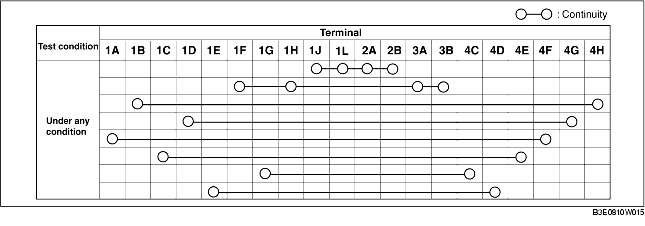
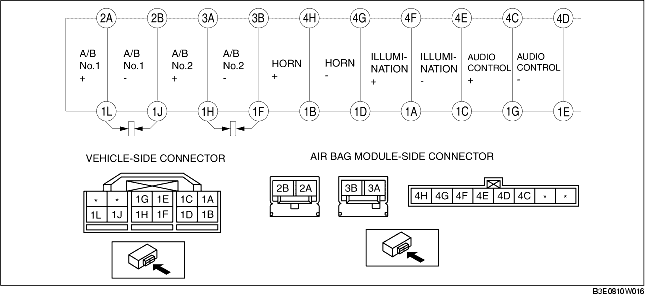

CLOCK SPRING INSPECTION
B3E081066123W03
1. Remove the clock spring. (See CLOCK SPRING REMOVAL/INSTALLATION.)
2. Verify that the continuity is as indicated in the table.
-
• If not as indicated in the table, replace the clock spring.
-
Note
-
• When the vehicle-side connector for the clock spring is disconnected, terminals 1F, 1H, 1J and 1L are shorted to prevent unexpected operation (deployment) of the air bag module.

